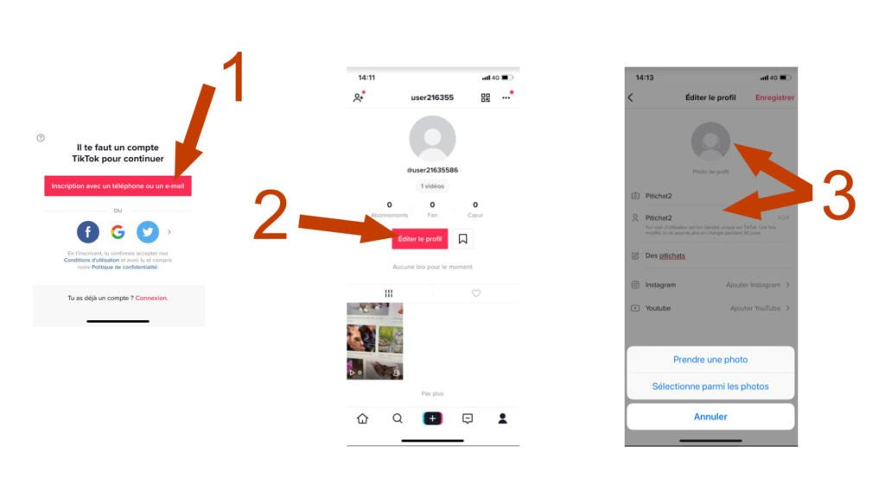
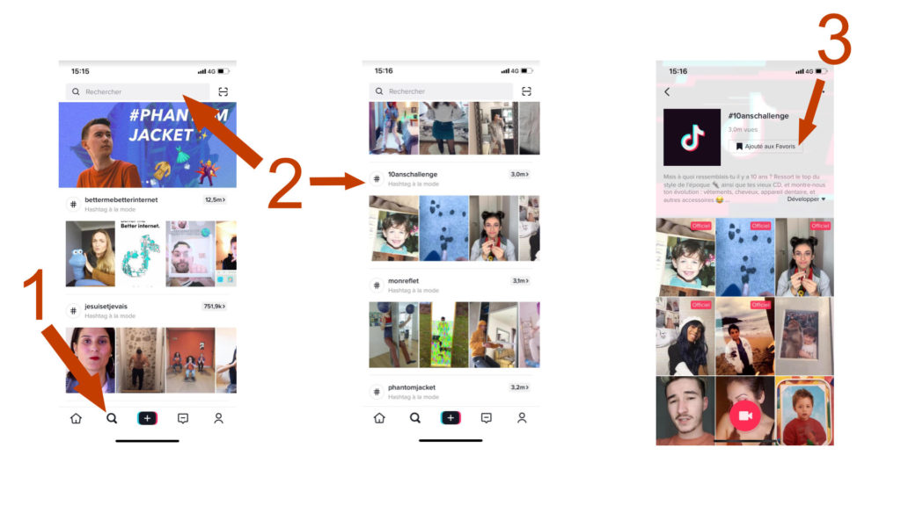
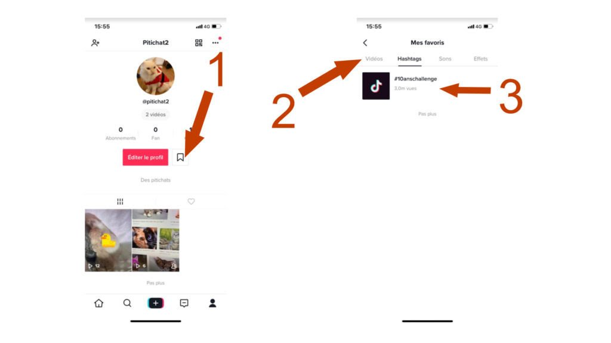
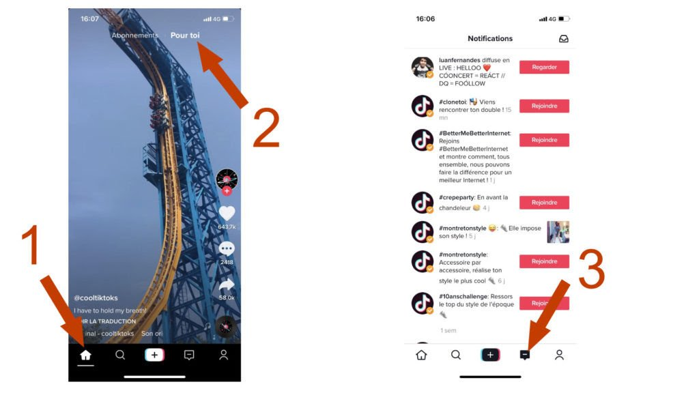
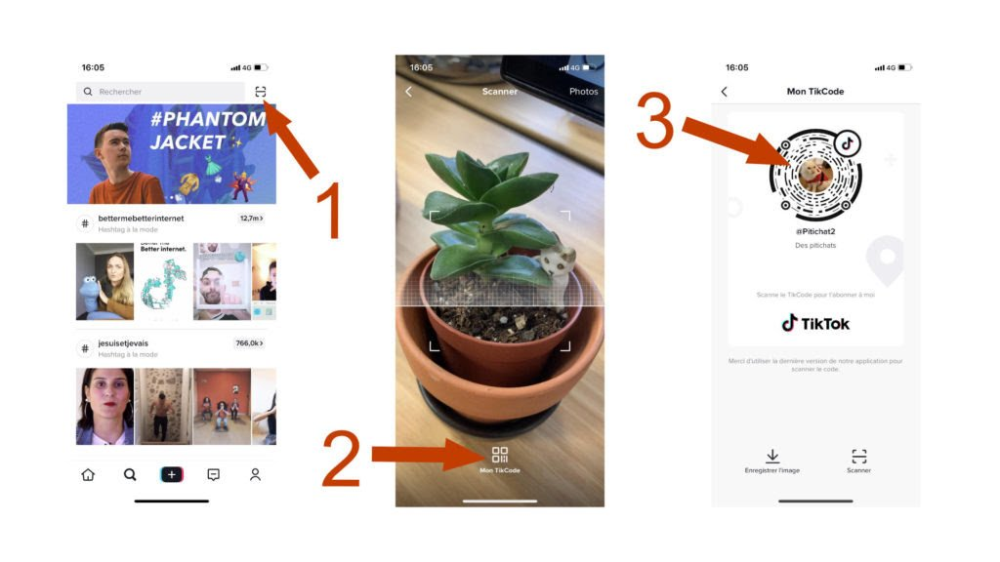

Vous ne comprenez rien à TikTok? Voici comment utiliser l'application préférée des ados.
TikTok compte désormais plus de 2 milliards de téléchargement. Depuis le mois de novembre dernier, l’application a enregistré pas de moins de 500 millions de téléchargement supplémentaires.
.svg)
Voici un guide de survie sur l'application à destination à tous ceux et celles qui n'y comprennent rien.
CREATION
TikTok aussi appelé Douyin, littéralement courte vidéo. C’est une application mobile de partage de vidéo et de réseautage social lancée en 2016. Elle est développée par l’entreprise chinoise ByteDance. Son logo évoque une note de musique. Lancée par Zhang Yiming en Septembre 2016, l’application s’est vite développée. TikTok est le principal service de ce type en Asie, et l’application est considérée comme celle ayant la plus forte croissance, tout pays confondu. Elle est l’application de partage de clips qui rassemble la plus grande communauté. En juin 2018, TikTok atteint les 150 millions d’utilisateurs actifs quotidiens (pour 500 millions d’utilisateurs actifs mensuellement). Au cours du premier trimestre de l’année 2018, elle est la première application mobile en nombre de téléchargement (45,8 millions selon des estimations).
Comment s’inscrire et modifier son profil :
La première chose à faire, c’est de télécharger l’application, elle est disponible gratuitement sur iOS et sur Android. Vous n’avez pas besoin de créer un compte pour regarder des vidéos. Ce sera en revanche nécessaire pour publier vous-même. Pour vous connectez à vos amis, ou pour vous abonner à des hashtags (mots-clés). Du coup, autant le faire d’office. Pour créer un compte, c’est très simple. Sur la page d’accueil, cliquez en bas à droite sur la silhouette de bonhomme. Une petite fenêtre Il faut un compte TikTok pour continuer s’ouvre alors(1). Vous pouvez, au choix : créer un compte à partir d’un email, connecter grâce à vos identifiants Facebook, Google ou Twitter. Renseignez votre date de naissance et un numéro de téléphone ou un email. Un code de sécurité va vous être envoyé par message. Il suffit de la retaper, puis valider. Votre compte est créé. Une fois ceci est fait, vous allez être redirigé sur la page d’accueil. Cliquez alors de nouveau sur la silhouette en bas à droite. Vous obtenez un aperçu de votre profil (2) Vous pouvez modifier directement, cotre pseudonyme et votre nom d’utilisateur (3). Les deux d’afficheront sur votre profil. Attention à votre choix de nom d’utilisateur : une fois qu’il est enregistré, il faut attendre 30 jours pour pouvoir le modifier de nouveau. Sous le pseudonyme et le nom d’utilisateur, on peut ajouter un description, qui détaille par exemple ce que l’on trouvera sur votre compte. Enfin, vous pouvez changer votre photo de profil en cliquant sur le cercle gris situé au-dessus de nom d’utilisateur. Du bout des doigts, vous pouvez zoomer dessus, dézoomer ou améliorer le cadrage. Il est aussi possible de choisir une vidéo de profil que vous devriez sélectionner parmi les vidéos capturées avec votre smartphone. Une fois que tout ceci est fait. Cliquez en haut à droite de l’écran sur la mention « enregistrer », en rouge voilà, votre compte est prêt : il ne vous plus qu’à regarder ou publier du contenu.
Comment trouver et regarder des vidéos :
La plus simple pour commencer, c’est de vous imprégner un peu de l’esprit de TikTok, en regardant des vidéos. Cliquez en bas de l’écran sur la petite icône en forme de loupe en (1).

Où puis-je retrouver les comptes de mes amis ou échanger avec eux ?
En haut, vous pouvez rechercher directement un mot-clé, comme « #danse », ou « chat » en (2). Appuyer sur « entrée ». Juste en dessous de la barre de recherche. Sélectionnez « hashtags ». Vous pouvez aussi faire une recherche par music. Taper le nom d’une chanson ou d’un ou d’une artiste et sélectionnez un «son ». Vous pouvez « ajouter aux favoris » une musique ou un hashtag en cliquant dessus puis sur a »ajouter aux favoris ». Pour passer une vidéo à une autre, il suffit de swiper l’écran vers le haut avec son doit. La loupe permet aussi de trouver des comptes. Il suffit de taper directement un nom d’utilisateur, précéder un @. Vous pouvez ainsi rechercher @pitichat, puis sélectionner « utilisateur ». Cliquez sur « s’abonner ». L’onglet loupe permet enfin de s’abonner à des thèmes ou des challenges populaires. Cliquez sur un hashtag proposé, puis sélectionnez « ajouter aux favoris »(3). Pour retrouver ses favoris, il faudra aller sur votre profil (la silhouette en bas à droite). Cliquez sur la petite icône marque-page à droite du bouton « éditer le profil ». Sélectionnez la catégorie souhaitée, par exemple « hashtag »

Pour trouver ses abonnements, on clique sur la petite maison en n’as à gauche de l’écran. Les vidéos faites par les personnes auxquelles vous êtes abonné s’afficheront ici. En haut de cet écran, vous pouvez aussi « sélectionnez-toi » : vous trouverez ici des vidéos suggérés par la plateforme. Enfin, vous pouvez aussi tenter l’onglet notification ici en (3) pour voir si les comptes auxquels vous êtes abonnés (et d’autres) diffusent du contenu.
Où puis-je retrouver les comptes de mes amis ou échanger avec eux ?
Pour retrouver ses amis, on peut effectuer une recherche par nom, d’utilisateur, comme nous l’avons expliqué plus haut. Il est également possible de scanner le QR code de l’ami en question. Dans l’onglet loupe, cliquez sur l’icône située à droite de l’espace « rechercher » (en 1). A la place de la jolie plante que vous voyez ci-dessous. Placez le QR code votre ami. Cela vous renverra vers son profil. Pour trouver votre code ou le sien, il suffit de cliquer sur « Mon TikCode » (en 2).

Comment réaliser et publier une vidéo ?
On trouve sur TikTok, des contenus extrêmement variés. Il y a des personnes qui filment leurs tenues du jour avec de la musique en fond, d’autres qui filment leur chat en train des bêtisent ou qui raconte des blagues, ou qui font du play-back artistique. En gros, vous pouvez publier à peu près tout et n’importe quoi. Pour cela, cliquez sur le petit « + » en bas de l’écran. Vous obtenez ceci :
.jpg)